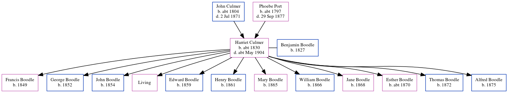

Benjamin Boodle 1827 -
[ Home ] | [ Calendar ] | [ Surnames Index ] | [ Errors ] | [ Family History ]Benjamin Boodle, the husband of Harriet Culmer (the three times great-aunt of Nigel Horne), was born in Hernhill, Kent, England in 18271,2 and married Harriet (with whom he had 12 children: Francis, George, John, Ann, Edward, Henry, Mary, William, Jane, Esther, Thomas and Alfred, along with 1 surviving child) at Ss Cosmus & Damian's Church, Blean, Kent, England on 29 Oct 18483.
During his life, he was living at Clapham Hill in Blean on 30 Mar 18511; at New Road in Blean on 7 Apr 18612; on Fordwich Lane, St Martin, Canterbury, Kent on 2 Apr 18714; and in Blean on 3 Apr 18815.
Children
- Francis was born in 1849
- George was born in 1852
- John was born in 1854
- Edward was born in 1859
- Henry was born in 1861
- Mary was born in 1865
- William was born in 1866
- Jane was born in 1868
- Esther was born c. 1870
- Thomas was born in 1872
- Alfred was born in 1875
Citations
- 1851 England, Wales & Scotland Census - Findmypast (was age 24 and a husband in the household)
- 1861 England, Wales & Scotland Census - Findmypast (was age 34 and the head of the household)
- Kent, Canterbury Archdeaconry marriages 1538-1928 - Findmypast
- 1871 England, Wales & Scotland Census - Findmypast (was age 43 and the head of the household)
- 1881 England, Wales & Scotland Census - Findmypast (was age 53 and the head of the household)
Media
1851 England, Wales & Scotland Census Transcription - GBC-1851-0005826129
1881 England, Wales & Scotland Census - GBC/1881/0004741623
Family Tree
Map
Generated by ged2site. Last updated on Jul 3, 2024
Known Issues
Apr 2, 1871: not living at same address as spouse Harriet Culmer ('Fordwich Lane, St Martin, Canterbury, Kent, England'/'Fordwich Lane, Canterbury, Kent, England')